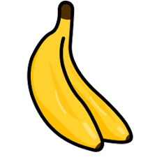
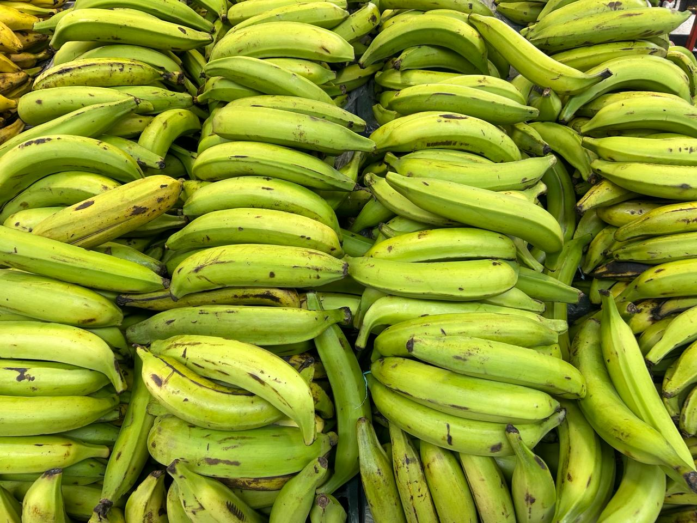

Inicio
Banana


Es un fruto con cualidades variables en tamaño, color y
firmeza, alargado, generalmente curvado y carnoso, rico en almidón,
cubierto con una cáscara, que puede ser verde, amarilla, roja, púrpura,
dorada o marrón cuando está madura